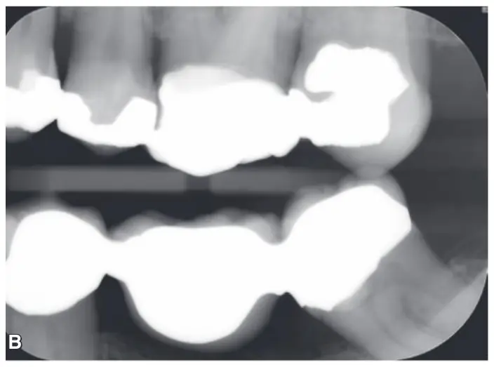
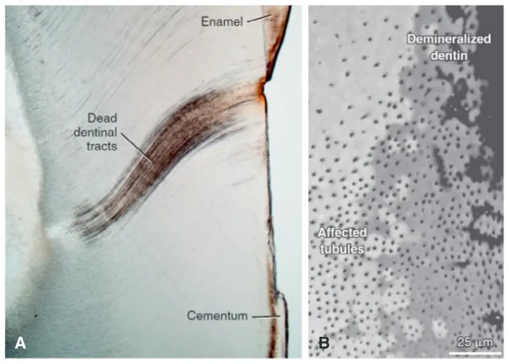

نسخه استخراجشده؛ ترجمه یا تأیید علمی انجام نشده است. وضعیت: captured
یک معاینهی بالینی خوب، پوسیدگی اکلوزال و سطوح صاف را پیدا میکند. ولی پوسیدگی بین دو دندان؟ بیتعارف باید گفت: «شناسایی بالینی پوسیدگی سطوح پروگزیمال تقریباً غیرممکن است، مگر آنکه کاویتاسیون رخ داده باشد.»

و وقتی کاویتاسیون رخ دهد، دیر است: «معمولاً یعنی ضایعه آنقدر بزرگ شده که بالینی قابل شناسایی است» — و در آن مرحله دندان ممکن است به ترمیم بزرگ داخلتاجی، درمان ریشه، یا اگر غیرقابلترمیم باشد کشیدن نیاز پیدا کند.
پس ابزار درست چیست؟ «تصویر بایتوینگ داخلدهانی، تصویر ارجح برای کشف پوسیدگی بیندندانی در دندانهای خلفی است.» تا وقتی اپراتور بتواند گیرنده را درست بگذارد، سطوح پروگزیمال باید واضح دیده شوند.
و سازوکارش همان قاعدهی تضعیف است: چون ضایعهی پوسیدگی مینا و عاج را دمینرالیزه میکند، «فوتونهای بیشتری از ناحیهی دمینرالیزهشده عبور میکنند تا از ناحیهی مینرالیزه، و ناحیهای نسبتاً رادیولوسنت (تیره) روی گیرنده میسازند».
پانورامیک را برای پوسیدگی به کار نبر. پوسیدگی گاهی روی پانورامیک دیده میشود، «ولی در این موارد معمولاً بهقدری بزرگ است که بالینی هم آشکار باشد». و چون پانورامیک «وضوح فضایی بهمراتب ضعیفتری نسبت به گیرندههای داخلدهانی دارد، نباید برای کشف پوسیدگی به آن اتکا شود».
سه عامل بیماری: «پوسیدگی دندان بیماری چندعاملی است که از برهمکنش سه عامل پدید میآید: دندان، بیوفیلم دندانی (پلاک)، و رژیم غذایی.» عوامل دیگری هم سهم دارند: بزاق، مواجهه با فلوراید، سیستم ایمنی، مدت مواجهه با میکروارگانیسمها، و وضعیت اجتماعی-اقتصادی بیمار.
و نقش استرپتوکوکوس موتانس: «شمار S. mutans موجود، هم پاسخدهنده و هم مستقیماً متناسب با میزان قند مصرفی از رژیم غذایی است.» اسید لاکتیک از تخمیر فروکتوز توسط این باکتری تولید میشود، pH موضعی را پایین میآورد و ساختار دندان را دمینرالیزه میکند.
یک نکته که همهی تفسیر پوسیدگی را عوض میکند: دیدن دمینرالیزاسیون روی تصویر، به معنای فعال بودن ضایعه نیست.

و این را صریح بدان: «حتی وقتی دمینرالیزاسیون روی تصویر کشف میشود، این به معنای یک ضایعهی پوسیدگی فعال نیست. این میتواند صرفاً یک ضایعهی قدیمیتر و غیرفعال (متوقفشده) باشد که میتوان آن را یک «زخم» در مینا توصیف کرد.»
و حکم قطعیاش: «هیچ تصویر واحدی نمیتواند پوسیدگی فعال را از پوسیدگی متوقفشده تفکیک کند؛ برای این کار به تصویر دومی در نقطهی زمانی دیگر برای مقایسه نیاز است.» یعنی «فعال» یک تشخیص زمانی است، نه یک یافتهی تصویری.
چرخهی دمینرالیزاسیون و ریمینرالیزاسیون: «فرایند پوسیدگی به شکل خطی در زمان پیش نمیرود. بلکه یک چرخهی پیوستهی دمینرالیزاسیون و ریمینرالیزاسیون است که در آن دمینرالیزاسیون سرانجام غالب میشود.» ولی چرخه قابل تغییر است: کاهش مصرف قند، حذف بیوفیلم با بهداشت مؤثر، و فلوراید موضعی.
ریمینرالیزاسیون سطح را کلسیم و فسفر بزاق ممکن میکنند که با سطح دندان تماس دارند ولی به بافتهای عمیقتر نفوذ نمیکنند. و «یک ضایعهی متوقفشده ممکن است دوباره فعال شود اگر فعالیت بیوفیلم از نو آغاز شود».
یک نکتهی بافتشناختی که ظاهر بالینی را توضیح میدهد: «فرایند دمینرالیزاسیون در ضایعات زودرس زیر سطح مینا آغاز میشود و یک لایهی سطحی نازک، مینرالیزه و دستنخورده از کلسیم و فسفات رسوبکرده باقی میگذارد که ممکن است مدتی دوام بیاورد.» به همین دلیل ضایعهی زودرس فعال یک لکهی سفید گچی است، در حالی که ضایعهی قدیمیتر و متوقفشده تیرهتر، سیاه یا قهوهای است.
چرا عاج سریعتر خراب میشود؟ مینا عمدتاً از کریستالهای هیدروکسیآپاتیت بیسلول و متراکم ساخته شده، ولی عاج تقریباً ۴۵٪ کریستال آپاتیت معدنی، ۳۰٪ ماتریکس آلی و ۲۵٪ آب است. «این تفاوتها به سرعت بیشتر دمینرالیزاسیون درون عاج میانجامد.» و «تخریب سطح بیرونی مینا (کاویتاسیون) معمولاً پس از درگیری عاج رخ میدهد».
فاصلهی تصویربرداری تابع ریسک است، نه تابع تقویم:
بایتوینگ خارجدهانی: برخی دستگاههای پانورامیک این امکان را دارند و سازندگان برتریاش را ادعا میکنند، ولی شواهد مبهم است؛ پس بایتوینگ داخلدهانی روش ارجح میماند. خارجدهانی را فقط وقتی در نظر بگیر که تصویر داخلدهانی ناممکن است: محدودیت رفتاری یا جسمی، رفلکس تهوع شدید، یا تورس مندیبولار بزرگ.
عوامل افزایندهی خطر: پوسیدگیهای متعدد قبلی، پوسیدگی عودکننده، ترمیمهای موجود با کیفیت ناکافی، بهداشت ضعیف، مواجههی ناکافی با فلوراید، مصرف مکرر نوشیدنی شیرین (از جمله شیردهی طولانی)، سابقهی خانوادگی سلامت دندانی ضعیف، نقص مینا، خشکی دهان، ناتوانی در بهداشت مناسب، رادیوتراپی سر و گردن، اختلالات خوردن (بولیمیا)، سوءمصرف الکل و مواد، مراقبت دندانی نامنظم.